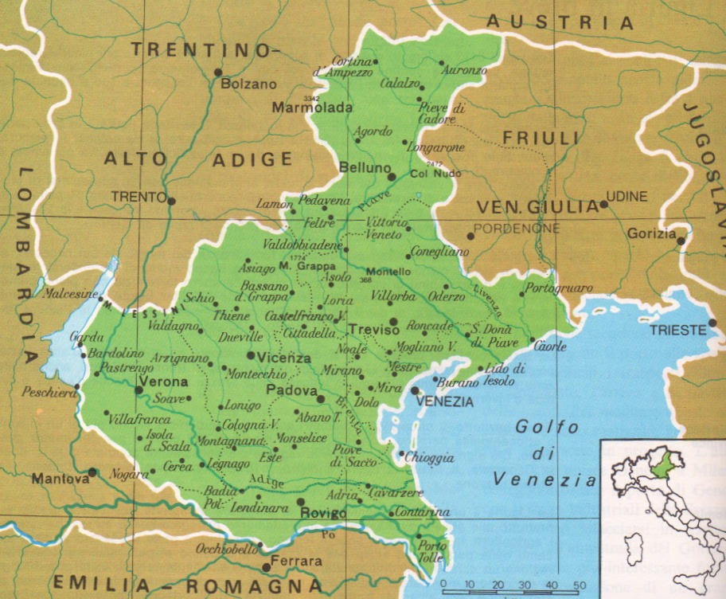

| Nome |
Veneto |
| Capoluogo |
Città Metropolitana di Venezia (VE) |
| Data di Istituzione |
1866 |
| Altitudine media |
180 m.s.l.m |
| Superficie |
18.345 km^2 |
| Abitanti (agosto 2023) |
4.834.655 |
| Densità |
264 ab/km^2 |
| Comuni |
563 |
| Province |
Belluno (BL), Padova (PD), Rovigo (RO), Treviso (TV), Verona (VR), Vicenza (VI) |
| Confini |
Emilia-Romagna, Friuli-Venezia Giulia, Lombardia, Trentino Alto-Adige, Austria |
| Patrono |
S.Marco Evangelista |
| PIL procapite (2017) |
33.100€ |
Posto da visitare assolutamente: Tre cime di Lavaredo - Provincia di Belluno (BL)
Le Tre Cime di Lavaredo, conosciute anche come Tre Cime di Misurina,
sono tre maestose cime di montagne nelle Dolomiti,
nel nord-est dell'Italia.
Questo massiccio montuoso è una delle icone naturali più famose e
riconoscibili delle Dolomiti e attira escursionisti, alpinisti
e appassionati di montagna da tutto il mondo.
Ecco alcuni dettagli sulle Tre Cime di Lavaredo:
Posizione e Accesso:
Le Tre Cime di Lavaredo sono situate nella zona di Auronzo di Cadore,
in provincia di Belluno, nelle Dolomiti orientali.
L'accesso principale è dal rifugio Auronzo,
da cui è possibile godere di una vista spettacolare sulle cime.
Formazione Geologica:
Le Tre Cime sono composte principalmente da dolomia,
una roccia sedimentaria calcarea caratteristica delle Dolomiti.
Questa roccia dona alle cime la loro particolare colorazione e forma.
Le Tre Cime:
Le cime che compongono il gruppo sono:
Cima Grande (Grande): È la cima più alta delle Tre Cime,
con un'altitudine di circa 2.999 metri.
Cima Piccola (Piccola):
Anche conosciuta come Cima Preuss, è la seconda cima per altezza,
con circa 2.857 metri.
Cima Ovest (Ovest): È la terza cima, con un'altitudine di circa 2.973 metri.
Storia dell'Alpinismo:
Le Tre Cime di Lavaredo sono state un importante obiettivo
per gli alpinisti fin dal XIX secolo.
La Cima Grande fu salita per la prima volta nel 1869,
aprendo la strada a numerose ascensioni successive e
stabilendo la regione come una delle aree più importanti
per l'alpinismo nelle Dolomiti.
Escursioni e Vie Ferrate:
La zona delle Tre Cime offre numerosi sentieri escursionistici di varie difficoltà.
Inoltre, ci sono diverse vie ferrate e percorsi alpinistici
per chi desidera avventurarsi a un livello più tecnico.
La celebre "Via Normale" è uno dei percorsi più frequentati per
raggiungere la Cima Grande.
Rifugi:
La zona è dotata di rifugi alpini che forniscono supporto e
rifugio agli escursionisti e agli alpinisti.
Il Rifugio Auronzo è uno dei principali punti di partenza
per le escursioni alle Tre Cime.
Vedute Panoramiche:
La vista panoramica delle Tre Cime di Lavaredo è spettacolare da
ogni angolazione. Sia che si osservino dalla valle o si cammini
lungo i sentieri circostanti, le cime offrono uno spettacolo mozzafiato,
specialmente all'alba e al tramonto.
Le Tre Cime di Lavaredo sono dunque un luogo straordinario
che combina paesaggi spettacolari con una ricca storia alpinistica.
La loro maestosità le rende un'icona delle Dolomiti e una meta
imperdibile per gli amanti della montagna.